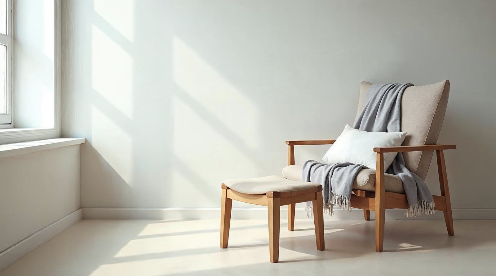
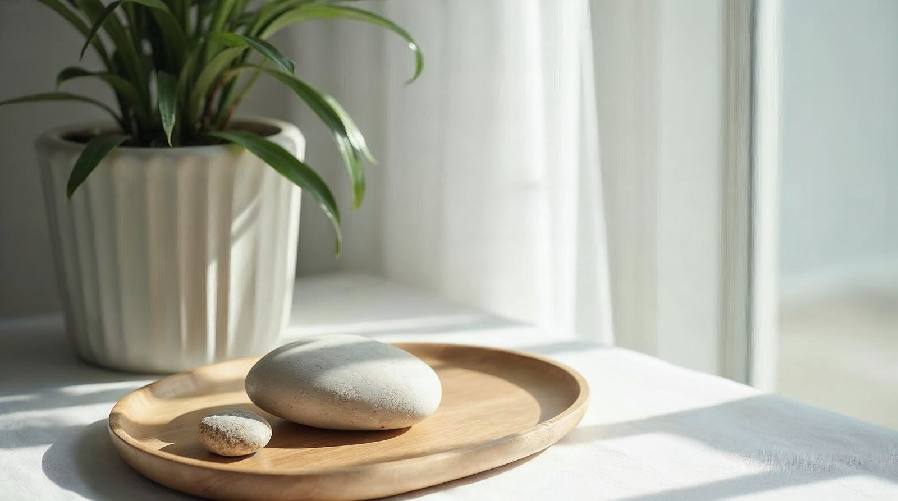
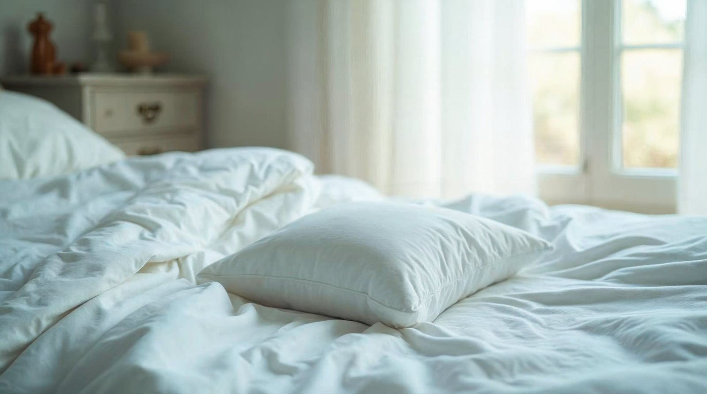
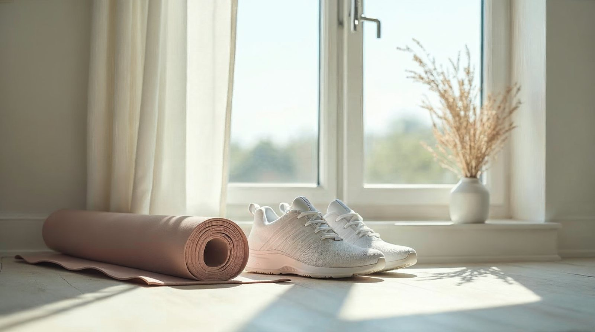
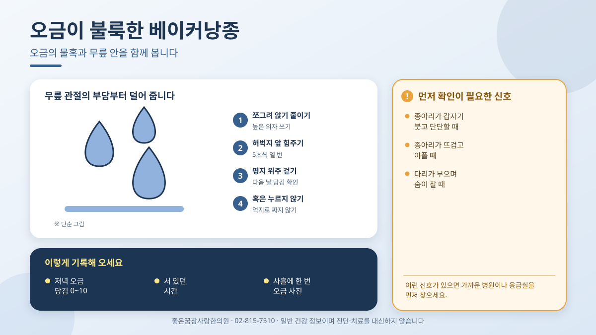

이종호 한의사 감수좋은꿈참사랑한의원 대표원장 (한의사 면허번호 19769)발행 2026-11-26 · 수정 2026-11-27
이 글의 차례
샤워를 하다가 무릎 뒤를 만졌는데 말랑한 것이 볼록 솟아 있어요. 아프지는 않은데 무릎을 끝까지 굽히면 뒤쪽이 꽉 끼고, 오래 서 있으면 오금이 묵직하게 당기죠. 처음 발견하면 '혹이 생겼다'는 생각에 덜컥 겁이 나시는 게 당연해요.
진료실에서 이 혹을 보여 주시는 분들이 제일 먼저 하시는 말은 거의 같아요. "이거 나쁜 거 아니에요?" 그 마음 충분히 이해해요. 그래서 저는 그 걱정부터 같이 풀어 드리는 걸 첫 진료의 큰 몫으로 생각하거든요.
무릎 뒤 오금에 생기는 이런 말랑한 혹을 흔히 베이커낭종, 또는 오금 물혹이라고 불러요. 무릎 관절 안을 적시는 관절액이 뒤쪽의 작은 주머니로 밀려 나가 고인 것으로, 혹이라는 이름과 달리 대개는 물주머니에 가까워요.
중요한 건 이 물주머니가 '왜 생겼는지'예요. 베이커낭종은 홀로 생기기보다 무릎 안에서 무언가가 관절액을 더 많이 만들게 할 때 함께 나타나는 경우가 많거든요. 그러니까 사실은 '오금의 혹'과 '무릎 안의 사정'을 나눠서 봐야 해요. 혹은 결과이고, 무릎 안이 원인인 경우가 많아서요.
오늘은 베이커낭종이 어떻게 생기고, 다른 혹이나 종아리 붓기와 어떻게 다른지, 생활에서 무엇을 살피면 좋은지를 차근차근 말씀드릴게요.

베이커낭종은 어떻게 생기나요
무릎 관절 안에는 관절이 부드럽게 움직이도록 돕는 관절액이 조금 들어 있습니다. 무릎 뒤쪽 근육 사이에는 이 관절 공간과 가느다랗게 이어진 작은 주머니가 있는데, 평소에는 비어 있거나 아주 조금만 차 있습니다.
무릎 안에 자극이 생기면 관절액이 평소보다 많아집니다. 이 액이 뒤쪽 주머니로 밀려 나가 고이면서 오금이 불룩해지는 것이 베이커낭종입니다. 통로가 한쪽으로만 잘 열리는 구조여서, 한번 고인 물이 쉽게 돌아오지 않기도 합니다.
그래서 크기가 날마다 조금씩 달라지는 것도 흔합니다. 많이 걸은 날 저녁에는 더 불룩하고, 쉬고 난 아침에는 조금 줄어든 것처럼 느끼시는 분이 많습니다.
왜 무릎 뒤에 물이 고일까요
어른의 베이커낭종은 무릎 안의 다른 문제와 짝을 이루는 경우가 많습니다. 가장 흔히 함께 보이는 것은 무릎 퇴행성 관절염과 반월상연골 손상입니다. 관절 안이 자극을 받으면 관절액이 늘고, 그 물이 뒤쪽으로 빠져나갑니다.
관절에 염증이 생기는 류마티스 관절염이나 통풍 같은 질환에서도 나타날 수 있습니다. 이런 경우에는 무릎 말고도 다른 관절이 붓거나 아침에 오래 뻣뻣한 느낌이 함께 오기도 해서, 다른 관절 이야기까지 함께 여쭙니다.
어린이에게도 오금 물혹이 생길 수 있는데, 어른과 달리 무릎 안 다른 문제 없이 생기는 경우가 많다고 알려져 있습니다. 아이의 경우에는 소아청소년과나 정형외과에서 먼저 확인하시는 쪽을 권합니다.
나이가 들면서 무릎 연골이 조금씩 얇아지면, 큰 다침 없이도 관절 안이 쉽게 예민해집니다. 그래서 중년 이후에 오금 물혹을 처음 발견하시는 분이 많고, 이때는 관절 자체를 아끼는 생활이 함께 필요합니다.
한쪽 무릎에만 생기는 경우가 많지만 양쪽에 함께 생기기도 합니다. 양쪽이 함께 불룩하다면 관절 전체의 사정이나 다른 관절 질환을 더 꼼꼼히 여쭙게 됩니다.
결국 오금의 물주머니는 '무릎 안을 들여다봐 달라'는 신호에 가깝습니다. 물주머니만 줄이는 데 마음을 쓰기보다, 무릎 안에서 관절액을 늘리는 이유가 무엇인지를 함께 찾는 것이 순서입니다.
다른 혹이나 붓기와는 어떻게 다른가요
오금에 만져지는 것이 모두 베이커낭종은 아닙니다. 지방이 뭉친 혹, 혈관이 늘어난 것, 드물게는 다른 종류의 혹도 이 자리에 생길 수 있습니다. 맥박이 뛰듯 박동이 느껴지는 혹, 점점 단단해지거나 빠르게 커지는 혹이라면 한의원 진료보다 정형외과나 외과 검사를 먼저 받아 보시길 권합니다.
종아리 붓기와 구분하는 것도 중요합니다. 베이커낭종이 커지거나 터지면 물이 종아리 쪽으로 흘러 내려가 종아리가 붓고 아플 수 있는데, 이 모습이 다리 깊은 정맥에 피가 뭉친 혈전(심부정맥혈전증)과 매우 비슷합니다. 겉모습만으로는 둘을 나누기 어려워, 혈전이 아닌지 가리는 것이 먼저입니다.
정맥이 구불구불 튀어나온 하지정맥류도 오금 근처에 보일 수 있습니다. 이 경우에는 말랑한 덩어리보다 푸른 혈관 줄기가 보이고, 오래 서 있으면 다리 전체가 무거워지는 경우가 많습니다.
아침과 저녁에 오금 크기를 손으로 만져 비교해 보시는 것도 좋습니다. 저녁에만 커진다면 하루 동안 쌓인 부담이 관절에 드러나는 것일 수 있으니, 낮 동안 쉬어 가는 틈을 늘려 보는 것부터 시작합니다.
오금이 당길 때 생활에서 겪는 불편
베이커낭종이 작을 때는 별 느낌이 없다가, 커지면 무릎을 끝까지 굽히기 어렵습니다. 쪼그려 앉거나 무릎을 꿇을 때 뒤쪽이 꽉 막힌 듯 끼고, 양반다리로 오래 앉아 있기가 불편해집니다.
오래 서 있거나 많이 걸은 저녁에는 오금이 묵직하고 당기는 느낌이 커집니다. 계단을 내려갈 때 무릎 뒤가 뻐근하다는 분도 계십니다. 대부분은 이 불편과 함께 무릎 앞이나 안쪽의 시큰함을 같이 말씀하십니다.
밤에 무릎을 편 채 누우면 당김이 심해져서 무릎 아래에 쿠션을 받치고 주무시는 분도 있습니다. 반대로 너무 굽힌 채 오래 있으면 뒤쪽이 눌려 불편하니, 살짝 굽힌 정도가 편한 경우가 많습니다.

초음파로는 무엇을 살펴보나요
진찰해 보고 필요하다고 판단되면 초음파로 오금을 살펴봅니다. 초음파는 물주머니가 맞는지, 크기는 어느 정도인지, 안이 맑은 물로 차 있는지 아니면 덩어리나 칸막이가 있는지를 보는 데 쓸모가 있습니다.
같은 자리를 몇 주 간격으로 다시 보면 크기가 어떻게 변하는지도 비교할 수 있습니다. 생활 관리를 하면서 물주머니가 줄어드는지, 그대로인지를 눈으로 확인하면 다음 걸음을 정하기가 한결 수월해집니다.
다만 초음파로 무릎 관절 안 깊은 곳의 연골이나 인대를 모두 볼 수는 없습니다. 무릎 안의 문제를 더 자세히 봐야 한다고 판단되면 정형외과에서 사진이나 다른 검사를 받아 보시도록 안내드립니다.

앉는 자세와 잠자리는 어떻게 하면 편할까요
바닥에 양반다리로 앉거나 무릎을 꿇고 앉는 생활은 오금을 가장 세게 누르는 자세입니다. 식탁과 의자를 쓰고, 소파는 너무 낮지 않은 것을 고르시면 무릎을 깊게 굽힐 일이 줄어듭니다.
의자에 앉을 때는 무릎이 엉덩이보다 살짝 낮은 높이가 편합니다. 다리를 한쪽으로 꼬거나 발을 의자 밑으로 깊게 넣는 자세는 오금을 접히게 하니, 두 발을 바닥에 편하게 두는 습관을 들여 보세요.
잠자리에서는 똑바로 누울 때 무릎 아래에 얇은 쿠션을 받쳐 무릎이 살짝 굽게 두면 당김이 덜한 분이 많습니다. 옆으로 누울 때는 무릎 사이에 베개를 끼워 두 무릎이 서로 누르지 않도록 해 주세요.
정형외과 치료와는 어떻게 함께 가나요
물주머니가 크고 불편이 심하면 정형외과에서 물을 빼거나 주사 치료를 하는 경우가 있습니다. 이런 치료를 받고 계신다면 그대로 이어 가시면 되고, 한의원 진료는 그와 나란히 무릎 주변의 긴장과 생활을 살피는 쪽입니다.
물을 뺀 뒤에도 무릎 안의 이유가 그대로라면 다시 고이는 경우가 있습니다. 그래서 치료 뒤에도 무릎에 부담을 주는 생활을 함께 조절하는 것이 중요하고, 이 부분을 진료실에서 함께 챙겨 드립니다.

어떤 운동이 무릎에 덜 부담스러울까요
무릎을 깊게 굽히는 운동, 뛰거나 점프하는 운동은 관절 안의 압력을 크게 올려 오금을 더 불룩하게 만들 수 있습니다. 불편이 있는 동안에는 줄넘기, 계단 뛰어오르기, 깊은 스쿼트는 잠시 쉬어 가시길 권합니다.
대신 물속 걷기나 가벼운 수영, 안장을 높게 맞춘 실내 자전거처럼 무릎에 체중이 덜 실리는 운동이 비교적 편합니다. 무릎을 움직이는 범위는 유지하되, 관절에 쿵쿵 충격이 가지 않는 쪽을 고르는 것이 요령입니다.
운동 뒤에는 오금을 한 번 만져 보세요. 운동 전보다 눈에 띄게 불룩하고 당김이 다음 날까지 남는다면 그 운동은 아직 이른 것이니 양이나 종류를 조절합니다. 반대로 별 변화가 없다면 조금씩 늘려 보셔도 됩니다.
먼저 이렇게 여쭙니다
처음 오시면 저는 대략 이런 순서로 여쭙니다. 미리 떠올려 오시면 진료가 훨씬 빨라집니다.
- 오금의 불룩함을 언제 처음 아셨고, 크기가 달라지나요?
- 무릎 앞이나 안쪽이 시큰하거나 붓는 일이 함께 있나요?
- 쪼그려 앉기, 무릎 꿇기, 계단 가운데 무엇이 가장 불편한가요?
- 종아리가 붓거나 뜨겁거나 단단해진 적이 있나요?
- 다른 관절도 붓거나 아침에 오래 뻣뻣한가요?
- 정형외과에서 관절염이나 연골 이야기를 들으신 적이 있나요?
혹이 보이는 사진을 같은 자세로 며칠 간격으로 찍어 오시면 크기 변화를 보는 데 도움이 됩니다. 무릎을 쭉 편 채 뒤에서 찍으면 비교가 쉽습니다.
일상에서 먼저 해 볼 수 있는 것
베이커낭종은 무릎 안의 자극이 줄면 함께 작아지는 경우가 있습니다. 그래서 생활 관리의 중심은 오금이 아니라 무릎 관절 전체의 부담을 줄이는 쪽입니다.
- 쪼그려 앉기와 무릎 꿇기는 당분간 줄이고, 낮은 의자 대신 높은 의자 쓰기
- 오래 서 있는 날에는 한 시간에 한 번 앉아 무릎 쉬게 하기
- 걷기는 평지 위주로, 통증이 다음 날까지 남지 않는 양으로
- 앉은 자세에서 무릎을 천천히 폈다 굽히는 운동으로 관절 움직임 유지하기
- 허벅지 앞 근육에 힘을 주었다 푸는 운동을 하루 몇 차례 하기
- 계단은 난간을 잡고 한 칸씩
허벅지 앞 근육 운동은 앉아서 무릎을 편 채 허벅지에 힘을 5초 주고 푸는 것을 열 번 반복하는 정도면 됩니다. 무릎을 크게 움직이지 않으면서 무릎을 받쳐 주는 근육을 깨울 수 있습니다.
오금을 세게 주무르거나 혹을 눌러 터뜨리려는 분이 가끔 계신데, 권하지 않습니다. 물주머니를 억지로 누르면 주변이 자극받아 오히려 불편이 커질 수 있습니다.
한의원에서 함께 살필 수 있는 경우
- 무릎 관절염이나 연골 문제가 있으면서 오금이 자주 당기는 경우
- 오래 서거나 걸은 저녁마다 무릎 뒤가 묵직하게 붓는 느낌이 드는 경우
- 쪼그려 앉기와 무릎 꿇기가 불편해 일상 동작이 줄어든 경우
- 무릎을 감싸며 걷다 보니 허리나 반대쪽 다리까지 피곤한 경우
- 정형외과 치료와 함께 생활 관리와 근육 긴장을 살피고 싶은 경우
좋은꿈참사랑한의원에서는 모든 분의 맥을 먼저 짚으며 불편한 동작과 생활을 여쭙습니다. 그다음 무릎 앞뒤와 안팎을 차례로 만져 보며 어디서 불편이 시작되는지, 허벅지와 종아리 근육이 얼마나 굳어 있는지를 봅니다.
진찰한 내용을 바탕으로 무릎 주변 근육의 긴장을 줄이는 침, 온열 관리, 걸음과 골반의 움직임을 살피는 추나 가운데 지금 상태에 맞는 것을 고릅니다. 무엇을 할지는 진찰 뒤에 정하며, 혹의 크기 변화는 사람마다 다릅니다.
정형외과에서 주사나 약 치료를 받고 계신다면 그대로 이어 가시면 됩니다. 드시는 약은 임의로 멈추지 않도록 안내하고, 한약을 상의할 때는 드시는 약을 먼저 확인하고 신중히 정합니다.
이렇게 기록해 오시면 상담이 쉬워집니다
오금의 불룩함은 날마다 조금씩 달라집니다. 일주일 정도만 간단히 적어 오시면 무엇이 무릎을 자극하는지 금방 보입니다.
- 하루 걸음 수나 서 있던 시간
- 저녁 무렵 오금의 당김 정도(0~10)
- 쪼그려 앉기나 무릎 꿇기를 한 날 표시
- 무릎 앞이나 안쪽이 시큰했던 날 표시
- 같은 자세로 찍은 오금 사진(사흘에 한 번)
기록을 나란히 놓으면 많이 걸은 날과 불룩해진 날이 겹치는지, 아니면 다른 이유가 있는지가 보이기 시작합니다. 그것이 다음 걸음을 정하는 실마리가 됩니다.
오금의 혹과 오래 잘 지내려면
베이커낭종을 처음 발견하면 혹 자체에만 마음이 쏠리기 쉬워요. 하지만 대부분은 무릎 안쪽 사정이 겉으로 드러난 모습이에요. 그래서 무릎을 아끼는 생활이 오금의 불편을 덜어 주는 데에도 보탬이 될 수 있어요.
혹이 있다는 사실보다, 그 혹이 알려 주는 무릎의 사정에 귀를 기울여 주세요. 무릎이 덜 지치는 하루를 쌓아 가는 게 오금을 돌보는 길이기도 해요. 혹의 크기는 날마다 조금씩 달라 보일 수 있는데, 원래 그래요. 하루하루에 마음 졸이지 않으셔도 돼요.
무릎 안팎을 살피고 치료를 고르는 건 제 일이에요. 집에서는 한 가지만 해 주시면 돼요. 쪼그려 앉는 동작을 줄여 주세요. 바닥 걸레질이나 낮은 의자 대신 서서 하거나 높은 의자를 쓰시는 거예요. 무릎을 깊이 접을수록 오금 주머니가 눌리기 쉽거든요.
허벅지 운동은 그다음에 무릎이 허락하는 만큼 천천히 더하면 돼요. 오금 사진과 일주일 기록을 가져오시면, 진료 때 그것부터 같이 펼쳐 봐요. 궁금한 건 편하게 물어보시고요.
이런 증상은 먼저 확인이 필요합니다
- 한쪽 종아리가 갑자기 붓거나, 아프거나, 붉어지는 경우(다리 혈전과 구분이 먼저입니다)
- 갑자기 숨이 차거나 가슴이 아프고 답답한 경우
이런 신호가 있으면 한의원보다 가까운 병원이나 응급실을 먼저 찾으세요.
함께 읽으면 좋은 글
- 무릎 뒤쪽이 불룩하고 당길 때 초음파로 무엇을 보나요?
- 계단에서 시큰하고 자주 붓는 무릎 퇴행성 관절염은 어떻게 살피나요?
- 무릎 반월상연골이 찢어졌다는 말을 들은 뒤에는 무엇을 살피고 어떻게 지내나요?
- 무릎에 물이 찼을 때 초음파로는 무엇을 확인할 수 있나요?
- 저녁마다 다리가 붓고 양말 자국이 깊게 남을 때, 부종은 무엇을 나눠 살피나요?

여쭙는 것
- 오금의 불룩함을 언제 처음 아셨고, 크기가 달라지나요?
- 무릎 앞이나 안쪽이 시큰하거나 붓는 일이 함께 있나요?
- 쪼그려 앉기, 무릎 꿇기, 계단 가운데 무엇이 가장 불편한가요?
생활에서 해 볼 것
- 쪼그려 앉기와 무릎 꿇기는 당분간 줄이고, 낮은 의자 대신 높은 의자 쓰기
- 오래 서 있는 날에는 한 시간에 한 번 앉아 무릎 쉬게 하기
- 걷기는 평지 위주로, 통증이 다음 날까지 남지 않는 양으로
한의원에서 함께 살필 것
- 무릎 관절염이나 연골 문제가 있으면서 오금이 자주 당기는 경우
- 오래 서거나 걸은 저녁마다 무릎 뒤가 묵직하게 붓는 느낌이 드는 경우
- 쪼그려 앉기와 무릎 꿇기가 불편해 일상 동작이 줄어든 경우
먼저 확인이 필요한 신호
- 한쪽 종아리가 갑자기 붓거나, 아프거나, 붉어지는 경우(다리 혈전과 구분이 먼저입니다)
- 갑자기 숨이 차거나 가슴이 아프고 답답한 경우
한눈에 보는 표
| 구분 | 핵심 |
|---|---|
| 여쭙는 것 | 오금의 불룩함을 언제 처음 아셨고, 크기가 달라지나요? 무릎 앞이나 안쪽이 시큰하거나 붓는 일이 함께 있나요? |
| 생활에서 해 볼 것 | 쪼그려 앉기와 무릎 꿇기는 당분간 줄이고, 낮은 의자 대신 높은 의자 쓰기 오래 서 있는 날에는 한 시간에 한 번 앉아 무릎 쉬게 하기 |
| 한의원에서 함께 살필 것 | 무릎 관절염이나 연골 문제가 있으면서 오금이 자주 당기는 경우 오래 서거나 걸은 저녁마다 무릎 뒤가 묵직하게 붓는 느낌이 드는 경우 |
| 먼저 확인이 필요한 신호 | 한쪽 종아리가 갑자기 붓거나, 아프거나, 붉어지는 경우(다리 혈전과 구분이 먼저입니다) 갑자기 숨이 차거나 가슴이 아프고 답답한 경우 |
자주 묻는 질문
베이커낭종은 저절로 없어지기도 하나요?
무릎 안의 자극이 줄면 작아지는 경우가 있지만 사람마다 다릅니다. 물주머니보다 무릎 안에서 관절액을 늘리는 이유를 함께 살피는 것이 중요합니다.
오금의 혹을 눌러서 터뜨려도 되나요?
권하지 않습니다. 억지로 누르면 주변이 자극받아 불편이 커질 수 있고, 물이 종아리로 흘러 붓기가 생길 수도 있습니다.
아프지 않으면 그냥 두어도 되나요?
크기가 그대로이고 불편이 적다면 지켜보는 경우도 많습니다. 다만 무릎 안의 다른 문제가 함께 있을 수 있어 한 번은 진찰을 받아 보시길 권합니다.
걷기 운동은 계속해도 되나요?
평지 걷기는 대부분 이어 가셔도 됩니다. 걸은 날 저녁 오금이 더 불룩하고 다음 날까지 당김이 남는다면 걷는 양을 조금 줄여 조절합니다.
좋은꿈참사랑한의원은 재진 때 지난번 이야기부터 이어서 여쭙니다. 진료시간과 예약은 오시는 길에서 확인하세요.
어디서 상담받을 수 있나요?
좋은꿈참사랑한의원은 서울 동작구 만양로2길 2 신성빌딩 3층·5층(서울 동작구 상도동, 7호선 상도역 3번 출구 근처)에 있습니다. 한의사 3명(이종호 대표원장, 조영기 수석진료원장, 정원영 진료원장)이 진료합니다. 진료시간은 평일 09:30~20:00(점심 13:00~14:00), 토·일·공휴일 09:30~15:00이며, 방문 전 전화로 확인을 권합니다. 예약은 네이버 예약, 카카오톡 상담, 전화 02-815-7510로 받습니다.
이 글은 일반적인 건강 정보이며 개인의 진단이나 치료를 대신하지 않습니다. 증상이 있거나 복용 중인 약이 있다면 진료를 통해 확인하세요. 치료 효과는 개인마다 다를 수 있습니다.
작성 기준: 일반적으로 알려져 있는 건강 정보를 참고해 정리했습니다(대표원장 감수). 증상 기록은 1~2주 동안 하루 1회, 비슷한 시간에 적어 오시면 지난 상태와 비교하기 쉽습니다.